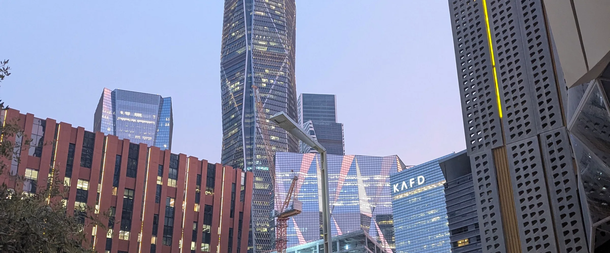

A financing request should reach the bank with the model, the structure and the Shariah contract already in place.
HAYKALAH works alongside banks and financial institutions through FINA., its financial structuring practice. We prepare the structure, the model and the documents behind Sukuk, funds and facilities, and bring borrowers to credit review with their numbers in order. The institution’s own Shariah board approves the structure, and regulated activities stay with licensed institutions. The archive census counts 55 banking, capital-markets and Sukuk engagements, 2004–2026.
Archive census counts are indicative.
What we do
Sukuk and asset-backed structures for a bank’s clients and their assets.
Banking documents and models that answer one question: is it bankable, and on what terms?
Bank processes run from the borrower side, with every offer compared on the same basis.
Fund structures and term sheets for a bank’s asset-management arm or another CMA-authorised manager.
Tokenization readiness and data rooms for income-producing assets.
Governance roles on fund boards.
Co-origination with HAYKALAH’s family, developer and government relationships.
How we create value
-
01
Innovation
We design Sukuk and asset-backed structures for a bank’s clients and their assets, for review and approval by the institution’s own Shariah board.
-
 03
03Optimization
We run bank processes from the borrower side and compare every offer on the same basis, as when offers from five banks were compared on limit, tenor, margin and conditions for a Holy Sites master developer in 2022.
How we work
-
01
Screen
Assets and borrowers are tested against bands such as occupancy and debt-service cover.
-
02
Structure
The Shariah contract, the vehicle and the security package are designed together.
-
03
Document
The model of record, the banking document and the term sheet reach the bank as one pack.
-
04
Approve
The bank’s Shariah board reviews the structure, and regulated steps sit with the bank or another licensed institution.
-
05
Monitor
The data room and the reporting stay live through the life of the facility.
Proof from the record
| Year | Engagement | HAYKALAH role | Status |
|---|---|---|---|
| 2022 | Bank financing process for over SAR 1bn of Holy Sites works at Mina and Arafat | Debt adviser to a Holy Sites master developer: offers from five banks compared on limit, tenor, margin and conditions, and one facility recommended | Facility files signed; recorded in HAYKALAH filesEvidence A: signed or outcome on file |
| 2025 | Sukuk and tokenization readiness for three income-producing assets in Riyadh, with screening bands of occupancy above 85% and debt-service cover of at least 1.20x | Structuring adviser | Early stageEvidence B: work product on file |
| 2007–10 | A healthcare investment company originated by HAYKALAH: market study, feasibility study, business plan and term sheet, with planned paid-up capital of USD 500m | Originator and financial adviser | On hold (2010)Evidence B |
All figures indicative. Planned capital is a client figure as recorded, not capital raised by HAYKALAH. Clients are not named until they consent.
Structures we use
Practices that serve banks and financial institutions
Questions
Does HAYKALAH replace the bank’s Shariah board?
No. HAYKALAH does not maintain its own Shariah board. Each structure is reviewed and approved by the Shariah board of the issuer, fund or financial institution involved.
Which parts of a transaction does HAYKALAH carry out?
HAYKALAH structures, models, documents and coordinates. Arranging, dealing, managing or advising on securities, and establishing or managing an investment fund, are carried out by a CMA-authorised institution engaged for the transaction.
What is a banking document?
The pack a borrower gives a bank to request financing: the project, the cash flows, the structure, the security and the terms sought. It answers whether a deal is bankable, and on what terms.
How are bank offers compared?
On one basis: limit, tenor, margin over the reference rate, security and conditions, so that the borrower can see the full cost and constraints of each offer.
Discuss a structure or a pipeline with us. An NDA can come first.